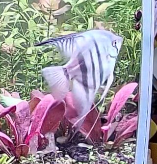
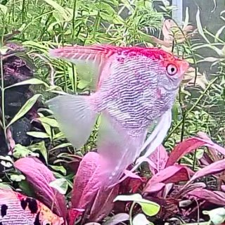
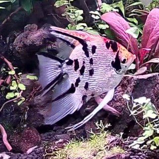

阴影
蓝银条纹 · 胆小害羞
H
0.52
S
0.78
E
0.36
胆子很小，常躲在水草后面。
这是我的鱼缸，也是 FishMood 的起点。我想把鱼儿的日常记录下来，从每一次游动与停留开始，更认真地关心这些小小的朋友。
每张小鱼卡片配一组 H / S / E 读数，分别对应摄食相关、警觉／回避与探索三个方面。

蓝银条纹 · 胆小害羞
胆子很小，常躲在水草后面。

红顶浅色 · 抢食积极
总是第一个冲出来抢食。

黑白花斑 · 爱探索
总在缸里游来游去，探索每一个角落。
我先用视频记下鱼缸的日常，再做了一个可以操作的三维鱼缸，并用逻辑回归和隐马尔可夫模型（HMM）试着读出鱼的状态。
阴影是蓝银条纹，樱桃头顶一抹红，泡泡身上是黑白花斑。在录像里看它们，按花色就能分辨。
录像由我每天放学后上传，页面播放的是已上传的片段，不是实时直播；直播接入还在开发中。